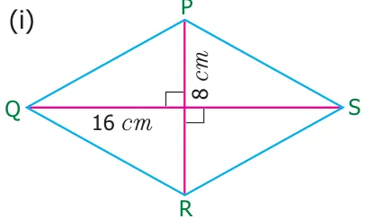
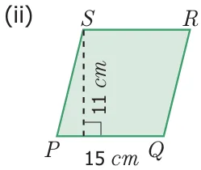
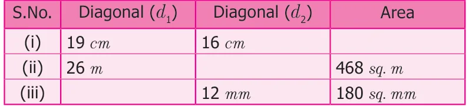

- Find the area of rhombus PQRS shown in the following figures.


- Find the area of a rhombus whose base is 14 cm and height is 9 cm.
- Find the missing value.

- The area of a rhombus is 100 sq. cm and length of one of its diagonals is 8 cm. Find the length of the other diagonal.
- A sweet is in the shape of rhombus whose diagonals are given as 4 cm
and 5 cm. The surface of the sweet should be covered by an aluminum foil. Find the cost of aluminum foil used for 400 such sweets at the rate of ₹7 per
100 sq. cm.
Objective type questions
- The area of the rhombus with side 4 cm and height 3 cm is
- 7 sq. cm (ii) 24 sq. cm (iii) 12 sq. cm (iv) 10 sq. cm
- The area of the rhombus when both diagonals measuring 8 cm is
- 64 sq. cm (ii) 32 sq. cm (iii) 30 sq. cm (iv) 16 sq. cm
- The area of the rhombus is 128 sq. cm and the length of one diagonal is 32 cm. The length of the other diagonal is
- 12 cm (ii) 8 cm (iii) 4 cm (iv) 20 cm
- The height of the rhombus whose area 96 sq. m and side 24 m is
- 8 m (ii) 10 m (iii) 2 m (iv) 4 m
- The angle between the diagonals of a rhombus is
- \(120 ^{\circ}\) (ii) \(180 ^{\circ}\) (iii) \(90 ^{\circ}\) (iv) \(100 ^{\circ}\)